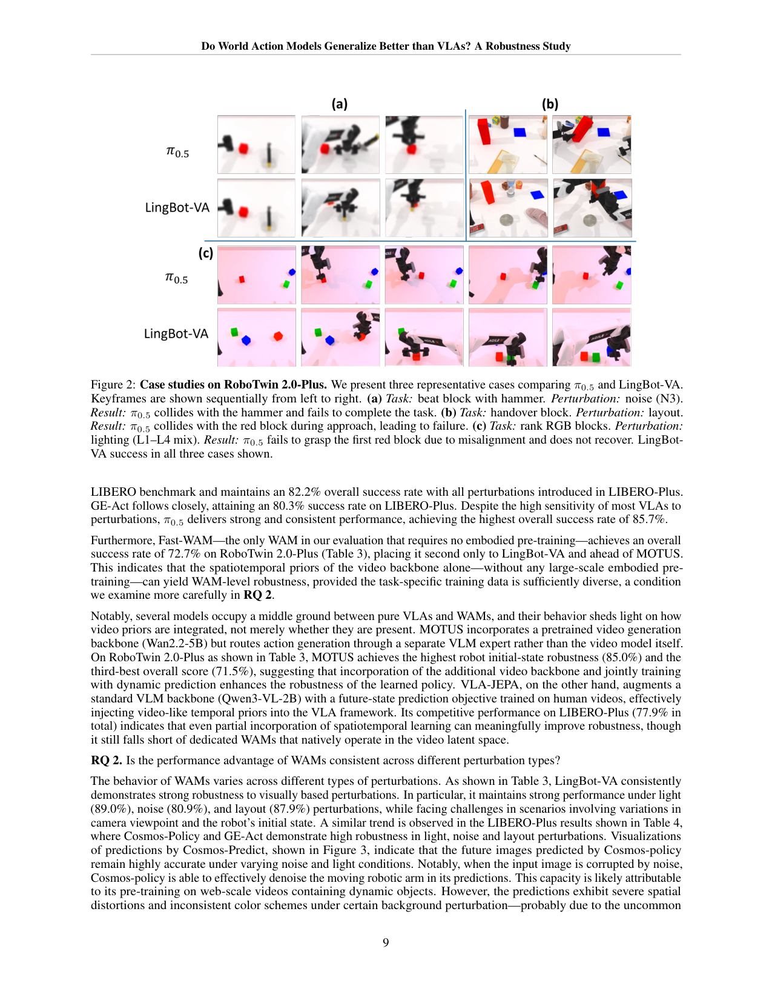
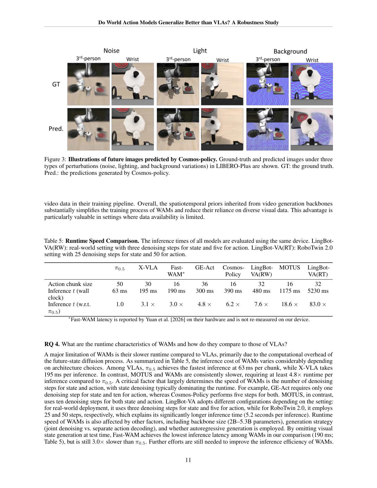

在 LIBERO-Plus 和自建 RoboTwin 2.0-Plus 两个扰动基准上系统对比 VLA/WAM/混合三类策略,发现 WAM 在视觉扰动(噪声/光照/布局)上更鲁棒,但相机视角和机器人初始状态仍是硬伤;推理比 π0.5 慢至少 4.8 倍是 WAM 部署的主要障碍。
问题
要解决什么：WAM(用视频生成模型做 policy)被宣称因继承视频预训练的时空先验而比 VLA 更鲁棒,但缺系统对照。作者要在统一扰动协议下,把 SOTA VLA(π0/π0.5/OpenVLA-OFT/X-VLA 等)、混合方法(MOTUS/VLA-JEPA)、WAM(LingBot-VA/Cosmos-Policy/GE-Act/Fast-WAM)放一起比,回答:WAM 真的比 VLA 泛化更好吗?鲁棒性来自视频先验还是数据多样性?代价是什么?
为什么 prior work 不够：之前的 WAM 论文(LingBot-VA/Cosmos-Policy 等)各自报告优于 VLA,但评测协议不统一、扰动维度不全、且往往只对比自家选的 baseline。VLA 阵营的 π0.5 也宣称强泛化,但靠的是大量多样化机器人+web 数据加多种学习目标,而非视频先验。两条路线的'鲁棒性来源'被混在一起,无法判断到底是视频先验有效,还是数据多样性有效,还是两者必需。DreamZero 因 14B Wan2.1 backbone 太贵且推理需 15min warmup 被排除;GigaWorld-Policy 未开源。所以需要一个统一基准把这些变量拆开。
输入 / 输出
输入
| 名称 | 类型 | 说明 |
|---|---|---|
| third-person camera | image | LIBERO-Plus: 1 张 256×256;RoboTwin 2.0-Plus: head 相机 320×240 |
| wrist camera(s) | image | LIBERO-Plus: 1 张;RoboTwin 2.0-Plus: 2 张(每臂一张),320×240 |
| language instruction | text | RoboTwin 2.0-Plus: 2500 条预生成变体(50 任务×50 变体),含 R1 干扰/R2 共识改写/R3 推理链 |
| proprioceptive state | vector | 机器人关节状态;具体形式随模型(delta joint/absolute joint/delta EEF 等,见 Appendix Table) |
输出
| 名称 | 类型 | 说明 |
|---|---|---|
| action chunk | continuous | chunk size 随模型:π0.5=50, X-VLA=30, Fast-WAM/GE-Act/Cosmos/MOTUS=16, LingBot-VA(RW)=32, LingBot-VA(RT)=32 |
控制频率：各模型原生频率;评测关注 success rate 和推理延迟,不强制统一频率
输入拼接 protocol
本研究不提出新 protocol,而是评测既有 VLA/WAM 的 protocol。各家族差异:
【VLA 家族】(π0.5/OpenVLA-OFT/X-VLA):<bos_vision>[img_3rd ⊕ img_wrist]<eos_vision><bos_lang>TokLLM(instruction)<eos_lang><bos_state>proprio<eos_state><bos_action>diffusion action expert → a1:H<eos_action>。语言通常 cross-attention 或 token 拼接,backbone 是 VLM(图像-文本预训练)。
【WAM 家族】(LingBot-VA/Cosmos-Policy/GE-Act/Fast-WAM/DreamZero):<bos_vision>[img history]<eos_vision><bos_lang>instruction<eos_lang><bos_state>proprio<eos_state><bos_wam>[video latent z_t, action latent a_t] → 视频扩散去噪 → (未来视觉状态 z_{t+1}, 动作 a)<eos_wam>。backbone 是视频生成模型(web 视频预训练)。
【三个关键差异】:
1. backbone 不同:VLA 用 VLM(静态图像-文本),WAM 用视频扩散(动态视频)。这决定了是否继承'时空先验'。
2. 因果预测方向不同:①IDM 式(LingBot-VA/GE-Act)先预测未来视觉状态再条件化动作 p(h_{t+1}|h_t)·g(a|h_t,h_{t+1});②联合去噪(Cosmos-Policy/DreamZero/Fast-WAM)共享 timestep 联合预测 p(h_{t+1},a|h_t);③动作优先(GigaWorld-Policy)先预测动作再条件化视频。论文发现 IDM 式对训练数据多样性依赖更低,联合去噪式更依赖。
3. 测试时是否生成视频:LingBot-VA/GE-Act/Cosmos 测试时必须生成未来视觉状态再解码动作(慢);Fast-WAM/GigaWorld-Policy 测试时可跳过视频生成直接出动作(快但仍比 π0.5 慢 3×)。数据集
| 数据 | 规模 | 备注 |
|---|---|---|
| LIBERO-Plus | 单臂 7-DoF Franka | Fei et al. 2025 提出,7 类扰动;2 相机(1 第三视角+1 腕部)256×256;评测单臂灵巧性 |
| RoboTwin 2.0-Plus(自建) | 双臂 Aloha-Agilex, 50 任务 | 本文扩展;7 维度 21 子维度扰动;3 相机(head+2 腕部)320×240;评测双臂协调鲁棒性;每 config 50 episodes/task,8 configs/task(1 clean+7 扰动) |
| π0.5 RoboTwin finetune | 27.5k 训练数据 | JAX 实现,60k gradient steps,AdamW,cosine lr 2.5e-5→2.5e-6,batch 64,delta joint actions |
| 评测模型集合 | 10+ 模型 | VLA: π0/π0-FAST/π0.5/OpenVLA-OFT/UniVLA/RIPT-VLA/X-VLA/HoloBrain0-GD/ABot-M0;混合: MOTUS/VLA-JEPA;WAM: GE-Act/Cosmos-Policy/LingBot-VA/Fast-WAM |
架构（摘要）
主干与结构
backbone：N/A(对比研究,不提模型);评测的 WAM 用 Cosmos-Predict2/LTX-Video/Wan2.1/Wan2.2 视频扩散,VLA 用 PaliGemma/Qwen3-VL 等 VLM
参数：评测模型跨度:VLA 2-7B;WAM 1.5-14B(VPP 1.5B / GE-Act 2.2B / Cosmos-Policy 2B / LingBot-VA 5.3B / Fast-WAM 6B / DreamZero 14B)
类型：systematic comparison: VLA vs Hybrid(VLA+WM) vs WAM, across 7 perturbation dimensions
关键组件
- 评测协议:7 维度×21 子维度扰动(Camera/Robot/Language/Light/Background/Noise/Layout),各维度独立激活隔离效果
- WAM 分类轴(Table 1):backbone / 是否 MOT / 是否 Pretrain Free / 是否 Causal Pred(动作条件化预测状态)/ 是否 AR Gen
- 训练数据对照(Table 2):embodied pre-training vs post-training vs task-specific finetune 三阶段,拆开 web video/human ego/cross-embodiment/task data
- 因果预测三式:IDM 式(LingBot-VA/GE-Act)/ 联合去噪(Cosmos/DreamZero/Fast-WAM)/ 动作优先(GigaWorld)
- 推理延迟对照(Table 5):π0.5 63ms 基线,各 WAM 4.8×~83× 慢;denoising steps 是主因
为什么这样设计
核心是要把'视频先验有效'和'数据多样性有效'两个混淆变量拆开。Fast-WAM 提供了一个天然实验:同架构同 backbone,RoboTwin 用 clean+domain-randomized 训(数据多样),LIBERO 用 clean only 训(数据单一)——结果 RoboTwin 上 72.7% 鲁棒、LIBERO 上崩到 51.5%。这隔离出'视频先验必要但不充分,数据多样性仍是关键杠杆'。同时对比 IDM 式 vs 联合去噪式发现:IDM 式因显式状态-动作因果耦合,对训练数据多样性依赖更低——这是架构选择对鲁棒性的影响。这两个发现是本研究最有价值的贡献。
数值 sense
| 项 | 值 |
|---|---|
| benchmarks | 2 个:LIBERO-Plus(单臂 Franka,2 相机 256×256)+ RoboTwin 2.0-Plus(双臂 Aloha-Agilex,3 相机 320×240) |
| tasks | RoboTwin 2.0-Plus: 50 双臂任务;LIBERO-Plus: 标准 LIBERO 任务集 |
| perturbation_dims | 7 维度 21 子维度:Camera(C1/C3 active, C2 default off)/Robot(joint+gripper)/Language(R1/R2/R3)/Light(L1/L2/L3/L4)/Background(B1/B2)/Noise(N1-N5)/Layout(O1/O2) |
| episodes_per_config | 50 episodes/task/config;8 configs/task(1 clean + 7 扰动分支);每分支只激活一个维度隔离效果 |
| robot_perturbation | 关节 Gaussian noise std=0.1 rad(clip ±0.225 rad);gripper 极端位置(0.05/0.95) p=0.25 |
| language_variants | 2500 条预生成(50 任务×50 变体);R1 干扰~30%/R2 共识改写~50%/R3 推理链~20% |
| model_params_span | VPP 1.5B / GE-Act 2.2B / Cosmos-Policy 2B / LingBot-VA 5.3B / Fast-WAM 6B / DreamZero 14B;VLA 多 2-7B |
| action_chunk_sizes | π0.5=50 / X-VLA=30 / Fast-WAM=GE-Act=Cosmos=MOTUS=16 / LingBot-VA=32 |
| inference_latency | π0.5 63ms(基线) / X-VLA 195ms(3.1×) / Fast-WAM 190ms(3.0×) / GE-Act 300ms(4.8×) / Cosmos-Policy 390ms(6.2×) / LingBot-VA(RW) 480ms(7.6×) / MOTUS 1175ms(18.6×) / LingBot-VA(RT) 5230ms(83×) |
| denoising_steps | GE-Act: 1 state + 10 action;Cosmos-Policy: 5+5;MOTUS: 10+10;LingBot-VA(RW): 3+5;LingBot-VA(RT): 25+50(state denoising 主导 runtime) |
→ 详见 Architecture tab。
关键结果
Insights
- WAM 不是万能鲁棒:它在噪声/光照/布局上强(视频先验帮忙),但在相机视角和机器人初始状态上和 VLA 一样弱(p9 Table 3)。视频先验对'视觉外观变化'有效,对'几何配置变化'无效——这是视频先验的边界(p12 conclusion)。
- π0.5 85.7% 总分最高证明:VLA 不靠视频先验也能鲁棒,但代价是训练数据极其多样复杂(7 类数据混合)。WAM 鲁棒更省事(Cosmos-Policy 185 条轨迹无 embodied pre-training 就 82.2%)。两条路殊途同归到鲁棒,但 WAM 训练更简单——这是 WAM 的真正卖点,不是'VLA 做不到'(p10 RQ3)。
- Fast-WAM 天然实验是最干净的因果论证:同架构同 backbone,只改训练数据多样性,鲁棒性差 21 点(72.7% vs 51.5%)。这把社区从'视频先验万能'的幻觉里拉回——视频先验必要但不充分,task-specific 训练数据多样性仍是关键杠杆(p10 RQ2)。
- 架构选择影响鲁棒性,不只是 backbone:IDM 式(LingBot-VA,显式状态-动作因果耦合)对训练数据多样性依赖低于联合去噪式(Fast-WAM)。这暗示显式因果建模提供额外架构先验——设计 WAM 时因果方向是重要考量(p10 RQ2)。
- WAM 推理慢的根因是 state denoising,不是 action:GE-Act 1 state step 最快(300ms),LingBot-VA(RT) 25 state steps 最慢(5230ms)。Fast-WAM 跳过测试时 state 生成是最快 WAM(190ms),但数据单一时鲁棒性崩——速度和鲁棒性有 trade-off(p11 RQ4)。
- 评测协议的'独立激活'设计是本研究方法论亮点:每 config 只开一个扰动维度,其余 clean,能隔离每个维度效果。这比'全扰动混合'更能定位失败原因——但代价是低估了多扰动叠加时的交互效应(论文未做叠加评测)。
vs 同类工作
- vs 各 WAM 原论文(LingBot-VA/Cosmos-Policy/DreamZero):那些论文各自报告优于 VLA,但评测协议不统一、baseline 自选;本研究用统一 LIBERO-Plus/RoboTwin 2.0-Plus 协议把 10+ 模型放一起比,数字才可比。
- vs LIBERO-Plus 原论文(Fei et al. 2025):LIBERO-Plus 只评 VLA,本研究扩展到 WAM 并自建 RoboTwin 2.0-Plus 双臂 benchmark,补了 WAM 在双臂协调鲁棒性上的评测空白。
- vs DreamZero 论文:DreamZero 因 14B Wan2.1 太贵且推理需 15min warmup 被本研究排除——这本身是个发现:DreamZero 这种大 WAM 在 benchmark-scale 评测上不实际,暗示 WAM 路线要落地推理效率是硬约束。
- vs 各 VLA scaling 论文(π0.5/OpenVLA-OFT):那些论文强调数据 scaling 提泛化,本研究把'数据多样性'和'视频先验'两个变量拆开,证明两者都能到鲁棒但代价不同——这是对 scaling 路线的补充视角。
局限
- 论文自承:DreamZero 和 GigaWorld-Policy 因 checkpoint 不开源/太贵被排除,评测集合不完整,最强 WAM 可能未参评(p8)。
- 论文自承:Fast-WAM 在 LIBERO 上用 clean only 训是'有意的自然实验',但两个 checkpoint 的 task 不同(RoboTwin 双臂 vs LIBERO 单臂),所以'数据多样性'和'task 类型'两个变量未完全隔离(p8)。
- 论文自承:WAM 推理慢是部署障碍,本研究只诊断未提出加速方案(p11 RQ4)。
- 我们读出:扰动评测是'独立激活'每维度,未做多扰动叠加评测——真实世界往往是多扰动同时发生,独立激活可能高估或低估实际鲁棒性。
- 我们读出:π0.5 在 RoboTwin 上是作者自训(JAX,60k steps),可能未达 π0.5 在 PI 原生训练的最优水平;π0.5 LIBERO-Plus 85.7% 是其论文数字,两个 setup 不完全可比。
- 我们读出:7 维度扰动里 Language 只测了指令改写,没测多语言/跨文化指令;Camera 只测了视角小扰动(±10°),没测极端视角变化——扰动空间还有扩展余地。
- 我们读出:所有评测都在仿真(LIBERO/RoboTwin 都是 sim),真机鲁棒性未验证;sim 里的'光照/噪声'和真机传感器噪声分布不同,结论外推到真机需谨慎。
可复现性
- code：RoboTwin 2.0-Plus benchmark 协议公开(论文 Appendix A);各模型用官方 checkpoint
- weights：评测的模型 checkpoint 大多公开;π0.5 RoboTwin 版是作者自训(JAX);DreamZero/GigaWorld-Policy 未开源
- sim_benchmark：LIBERO-Plus(公开)+ RoboTwin 2.0-Plus(自建,协议公开)
- real_eval：无(全仿真)
WAM vs VLA 鲁棒性研究 — 架构详解
> 配套 card.json。本研究不提模型,而是评测既有 VLA/WAM 的鲁棒性。下面用 Mermaid 把评测框架、WAM 分类轴、Fast-WAM 天然实验三个核心结构画清,再用文字讲透。所有数字来自论文(页码/表号标注)。
1. 评测框架总览
flowchart TB
subgraph Bench["两个互补 benchmark"]
L["LIBERO-Plus<br/>单臂 7-DoF Franka<br/>2 相机 256×256<br/>7 类扰动(Fei et al.)"]
R["RoboTwin 2.0-Plus(自建)<br/>双臂 Aloha-Agilex, 50 任务<br/>3 相机 320×240<br/>7 维度 21 子维度扰动"]
end
subgraph Perturb["7 维度 21 子维度扰动(独立激活)"]
P1["Camera (C1/C3)"]
P2["Robot (joint+gripper)"]
P3["Language (R1/R2/R3)"]
P4["Light (L1/L2/L3/L4)"]
P5["Background (B1/B2)"]
P6["Noise (N1-N5)"]
P7["Layout (O1/O2)"]
end
subgraph Models["三类策略 10+ 模型"]
VLA["VLA: π0/π0-FAST/π0.5/<br/>OpenVLA-OFT/UniVLA/RIPT-VLA/<br/>X-VLA/HoloBrain0-GD/ABot-M0"]
HYB["Hybrid: MOTUS / VLA-JEPA"]
WAM["WAM: GE-Act / Cosmos-Policy /<br/>LingBot-VA / Fast-WAM<br/>(DreamZero/GigaWorld 排除)"]
end
Bench --> Perturb
Perturb --> Models
Models -->|success rate + 推理延迟| Result{鲁棒性 + 速度对照}协议设计:每 config 只激活一个扰动维度,其余保持 clean,50 episodes/task/config,8 configs/task(1 clean + 7 扰动分支)。这隔离每个维度的效果,避免混淆。同协议同硬件让 10+ 模型数字可比。
2. WAM 分类轴(Table 1)
flowchart LR
subgraph Axis["5 个分类轴"]
A1["backbone<br/>SVD/LTX/Cosmos-Predict2/<br/>Wan2.1/Wan2.2"]
A2["MOT?<br/>视频/动作分离 backbone"]
A3["Pretrain Free?<br/>不需 task-agnostic<br/>embodied 预训练"]
A4["Causal Pred 方向<br/>IDM / 联合 / 动作优先"]
A5["AR Gen?<br/>自回归生成"]
end
VPP["VPP 1.5B<br/>SVD<br/>no MOT, no PretrainFree,<br/>IDM, no AR"]
GE["GE-Act 2.2B<br/>LTX<br/>MOT, no PF,<br/>no causal, AR"]
COS["Cosmos-Policy 2B<br/>Cosmos-Predict2<br/>no MOT, PF,<br/>联合, no AR"]
LIN["LingBot-VA 5.3B<br/>Wan2.2<br/>MOT?, no PF,<br/>IDM, AR"]
DZ["DreamZero 14B<br/>Wan2.1<br/>no MOT, no PF,<br/>联合, AR"]
GIG["GigaWorld-Policy >5B<br/>Wan2.2<br/>no MOT, no PF,<br/>动作优先, no AR"]
FW["Fast-WAM 6B<br/>Wan2.2<br/>MOT, PF,<br/>联合, no AR"]关键差异:
- Pretrain Free 只有 Fast-WAM 是 ✓——它只用 task-specific 60h 数据无 embodied pre-training 就达 72.7%,证明视频 backbone 时空先验足够。
3. Fast-WAM 天然实验:隔离"视频先验 vs 数据多样性"
这是本研究最有价值的发现,值得单独画。
flowchart TB
subgraph Same["同架构同 backbone: Wan2.2-5B + Fast-WAM 设计"]
RT["RoboTwin 2.0-Plus checkpoint<br/>训练: clean + domain-randomized 27.5k<br/>(数据多样)"]
LB["LIBERO-Plus checkpoint<br/>训练: clean only<br/>(数据单一)"]
end
RT --> RT_orig["Original 91.2%"]
RT --> RT_pert["扰动平均 72.7%"]
RT_orig -.->|降 18 点| RT_pert
LB --> LB_orig["Original 97.6%"]
LB --> LB_pert["扰动平均 51.5%"]
LB_orig -.->|降 46 点| LB_pert
RT_pert -->|对比| LB_pert
LB_pert -.->|差 21 点| RT_pert结论:架构和 backbone 完全相同,唯一变量是训练数据多样性。RoboTwin(数据多样)只降 18 点;LIBERO(数据单一)降 46 点。视频先验必要但不充分,task-specific 训练数据多样性仍是关键杠杆。这把社区从"视频先验万能"的幻觉里拉回。
4. 三类策略的鲁棒性对照(RoboTwin 2.0-Plus 主结果)
| 类型 | 模型 | Original | Camera | Robot | Lang | Light | BG | Noise | Layout | Total |
|---|---|---|---|---|---|---|---|---|---|---|
| VLA | π0.5 | 78.4 | 45.6 | 27.6 | 74.4 | 49.6 | 71.7 | 64.9 | 56.8 | 58.6 |
| VLA | X-VLA | 65.6 | 23.2 | 65.2 | 64.4 | 63.1 | 58.6 | 49.7 | 34.8 | 53.1 |
| Hybrid | MOTUS | 87.0 | 21.6 | 85.0 | 83.2 | 84.6 | 84.4 | 43.1 | 82.8 | 71.5 |
| WAM | LingBot-VA | 92.1 | 28.9 | 36.2 | 87.3 | 89.0 | 91.3 | 80.9 | 87.9 | 74.2 |
| WAM | Fast-WAM | 91.2 | 30.4 | 53.2 | 86.7 | 88.8 | 90.0 | 76.4 | 83.2 | 72.7 |
读法:
- LingBot-VA 总分第一(74.2%),在 Light/Background/Noise/Layout 视觉扰动上最强(80.9~91.3%)。
5. LIBERO-Plus 结果(单臂,VLA 反而更强)
| 类型 | 模型 | Original | Total |
|---|---|---|---|
| VLA | π0.5 | 96.9 | 85.7 |
| VLA | X-VLA | 98.1 | 71.4 |
| VLA | OpenVLA-OFT_m | 97.6 | 67.9 |
| Hybrid | VLA-JEPA | 97.2 | 77.9 |
| WAM | Cosmos-Policy | 98.5 | 82.2 |
| WAM | GE-Act | 94.4 | 80.3 |
| WAM | Fast-WAM(clean only) | 97.6 | 51.5 |
关键反差:LIBERO-Plus 上 π0.5(85.7%)反而超 WAM。原因:π0.5 训练数据极其多样(7 类混合:web data/multi-env tabletop/cross-embodiment/mobile manipulation/high-level planning/verbal instruction),用数据多样性补偿了视频先验缺失。WAM 省数据(省训练复杂度)但 LIBERO 上数据单一时 Fast-WAM 崩到 51.5%。
两条路殊途同归到鲁棒:WAM 靠视频先验省数据,VLA 靠数据多样性补先验缺失——都能到鲁棒,代价不同。
6. 推理延迟拆解(Table 5)
| 模型 | 类型 | Action chunk | 推理延迟 | vs π0.5 | state steps | action steps |
|---|---|---|---|---|---|---|
| π0.5 | VLA | 50 | 63 ms | 1.0× | — | — |
| X-VLA | VLA | 30 | 195 ms | 3.1× | — | — |
| Fast-WAM | WAM | 16 | 190 ms | 3.0× | (跳过) | — |
| GE-Act | WAM | 36 | 300 ms | 4.8× | 1 | 10 |
| Cosmos-Policy | WAM | 16 | 390 ms | 6.2× | 5 | 5 |
| LingBot-VA(RW) | WAM | 32 | 480 ms | 7.6× | 3 | 5 |
| MOTUS | Hybrid | 16 | 1175 ms | 18.6× | 10 | 10 |
| LingBot-VA(RT) | WAM | 32 | 5230 ms | 83× | 25 | 50 |
发现:
- WAM 全部至少 4.8× 慢于 π0.5(除 Fast-WAM 3.0×,但它跳过了 state 生成)。
7. 评测协议数值 sense
| 项 | 值 | 出处 |
|---|---|---|
| benchmarks | 2:LIBERO-Plus(单臂 Franka,2 相机 256×256)+ RoboTwin 2.0-Plus(双臂 Aloha-Agilex,3 相机 320×240) | 论文 p7 |
| 任务 | RoboTwin 2.0-Plus: 50 双臂任务;LIBERO-Plus: 标准 LIBERO 任务集 | 论文 p7, App A |
| 扰动维度 | 7 维度 21 子维度:Camera(C1/C3 active,C2 default off)/Robot/Light(L1-L4)/Background(B1/B2)/Noise(N1-N5)/Layout(O1/O2)/Language(R1/R2/R3) | 论文 App A Table 6 |
| episodes | 50 episodes/task/config;8 configs/task(1 clean + 7 扰动分支) | 论文 App A.2 |
| Robot 扰动 | 关节 Gaussian noise std=0.1 rad(clip ±0.225 rad);gripper 极端位置(0.05/0.95) p=0.25 | 论文 App A.3 |
| Language 变体 | 2500 条预生成(50 任务×50 变体);R1 干扰~30%/R2 共识改写~50%/R3 推理链~20% | 论文 App A.3 |
| Noise(N1-N5) | motion blur/Gaussian blur/zoom blur/fog/glass blur;severity [2,3] | 论文 App A.3 Table 6 |
| Light(L1-L4) | diffuse color tint[0,3.5]/direction(35% side-light)/specular[0.3,6.0]/shadows | 论文 App A.3 |
| Camera(C1/C3) | distance[0.85,1.0]×/orientation yaw-pitch-roll[0,5°] | 论文 App A.3 |
| 模型参数跨度 | VPP 1.5B / GE-Act 2.2B / Cosmos-Policy 2B / LingBot-VA 5.3B / Fast-WAM 6B / DreamZero 14B;VLA 多 2-7B | 论文 Table 1 |
| action chunk | π0.5=50 / X-VLA=30 / Fast-WAM=GE-Act=Cosmos=MOTUS=16 / LingBot-VA=32 | 论文 Table 5 |
| π0.5 RoboTwin finetune | 27.5k 训练数据,60k steps,AdamW,cosine lr 2.5e-5→2.5e-6,batch 64,delta joint | 论文 p7 |
8. 三类策略的本质区别
| 维度 | VLA | Hybrid (VLA+WM) | WAM |
|---|---|---|---|
| backbone | VLM(静态图像-文本) | VLM + 视频辅助 | 视频扩散(动态视频) |
| 预训练先验 | 语义先验 | 语义 + 部分时空 | 完整时空先验 |
| 鲁棒性来源 | 数据多样性补偿 | 视频辅助任务注入 | 视频先验(必要不充分) |
| 训练复杂度 | 高(需多源数据) | 中 | 低(可 Pretrain Free) |
| 推理速度 | 快(63-195ms) | 慢(1175ms) | 慢(190-5230ms) |
| 代表 | π0.5, OpenVLA-OFT | MOTUS, VLA-JEPA | LingBot-VA, Fast-WAM, Cosmos |
本研究的核心判断:WAM 的定位是用视频先验换训练简单性,但付推理速度代价,并不必然比 VLA 强。VLA 用数据多样性也能到鲁棒,但训练复杂。两条路都能到鲁棒,选择取决于算力预算和数据可得性。
7 类扰动可视化(RoboTwin 2.0-Plus)

原文 caption：Examples of perturbations on RoboTwin 2.0-Plus tasks. Definition of notations (N1, L1, etc.) can be found in Section A.
RoboTwin 2.0-Plus 七类扰动的可视化样例:Original(baseline)/Camera(C1+C3 视角变化)/Robot(关节+夹爪初始状态)/Language(R1/R2/R3 指令改写)/Light(L1-L4 光照)/Background(B1+B2 背景)/Noise(N1-N5 传感器噪声)/Layout(O1+O2 干扰物+目标位姿)。给读者一个'扰动到底长什么样'的直观感受,定义了所有后续结果的评测口径。
LingBot-VA vs π0.5 失败/成功案例

原文 caption：Case studies on RoboTwin 2.0-Plus. Three representative cases comparing π0.5 and LingBot-VA. (a) noise N3: π0.5 collides with hammer and fails. (b) layout: π0.5 collides with red block. (c) lighting L1-L4: π0.5 fails to grasp red block due to misalignment.
三个 RoboTwin 任务上 π0.5 失败 vs LingBot-VA 成功的 keyframe 对比:①锤击方块(噪声 N3)π0.5 撞锤子失败;②递方块(layout)π0.5 接近时撞红方块失败;③排 RGB 方块(光照 L1-L4)π0.5 因对齐失败抓不到第一块。LingBot-VA 三例都成功。这是'WAM 在视觉扰动下比 VLA 鲁棒'的定性证据——π0.5 在噪声/光照/布局上都崩,LingBot-VA 稳。
Cosmos-Policy 预测的未来图像

原文 caption：Illustrations of future images predicted by Cosmos-policy. Ground-truth and predicted images under three types of perturbations (noise, lighting, and background variations) in LIBERO-Plus are shown.
Cosmos-Policy 在 LIBERO-Plus 三种扰动(噪声/光照/背景)下预测的未来图像 vs ground truth。关键观察:①噪声扰动下 Cosmos-Policy 能在预测里有效 denoise 运动的机械臂(继承自 web 视频的动态对象先验);②但背景扰动下预测出现严重空间扭曲和颜色不一致——少见背景模式让视频模型崩。这是'WAM 鲁棒性来自视频先验,但视频先验在 OOD 背景上失效'的机制证据。
🎧 音频版
时长 18:07 · Edge TTS
Do World Action Models Generalize Better than VLAs? A Robustness Study
2026-04-30，Huawei Technologies 的 Zhanguang Zhang 等人发布的论文，标题是 Do World Action Models Generalize Better than VLAs? A Robustness Study。
开场：这篇论文真正要解决什么
这份研究把现在最火的两条机器人策略路线，VLA 和 WAM，放在统一扰动协议下系统比一比，看看到底谁更鲁棒，为什么。它是一个对照实验，而不是新模型或新训练方法。
背景是这样。最近一年，WAM，也就是用视频生成模型做机器人策略的那一脉，像 LingBot-VA、Cosmos-Policy、DreamZero 这些，纷纷报告说自己比 VLA 鲁棒。理由听起来很顺：WAM 的 backbone 是视频生成模型，在 web 视频上预训练过，继承了时空先验，知道"动作会让世界怎么变"，所以泛化更好。而 VLA 的 backbone 是 VLM，在静态图像文本上预训练，只有语义先验，缺物理动态先验。
但问题是，这些 WAM 论文各自评测、baseline 自选、协议不统一，数字根本不可比。而且 VLA 阵营的 π0.5 也宣称自己鲁棒性强——它靠的是把 web data、多环境 tabletop、cross-embodiment、移动操作、高层规划、语言指令七类数据全混进去训，用数据多样性补偿先验缺失。
于是"鲁棒性到底来自视频先验还是数据多样性"这个问题被搅成一团浆糊。两个变量在大多数模型上耦合在一起，分不开。
作者要回答的是：WAM 真的比 VLA 泛化更好吗？如果更好，是视频先验的功劳，还是训练数据多样性的功劳，还是两者都得有？代价是什么？
它的评测框架：统一扰动协议 + 两互补 benchmark
要公平对比，第一步是统一评测协议。作者用了两个 benchmark。
一个是 LIBERO-Plus，别人已经提出的，单臂 Franka 机器人，7 类扰动，两个相机 256×256。另一个是作者自建的 RoboTwin 2.0-Plus，双臂 Aloha-Agilex 平台，50 个任务，三个相机 320×240，同样 7 类扰动但扩展到 21 个子维度。两个 benchmark 互补——LIBERO 评单臂灵巧性，RoboTwin 评双臂协调鲁棒性，结论不依赖单一 setup。
七类扰动分别是：Camera（相机视角）、Robot（机器人初始状态）、Language（语言指令改写）、Light（光照）、Background（背景纹理）、Noise（传感器噪声）、Layout（干扰物布局）。每个维度再细分，比如 Noise 有 5 种：motion blur、Gaussian blur、zoom blur、fog、glass blur。Light 有 4 种：diffuse color、direction、specular、shadows。
评测协议有个设计亮点：独立激活。每个 config 只开一个扰动维度，其余保持 clean。50 个 episode 每任务每 config，8 个 config 每任务——1 个 clean baseline 加 7 个扰动分支。这样能隔离每个维度的效果，避免混淆。比那种"所有扰动一起上"的评测更能定位失败原因。
然后是模型集合。作者把 10 多个模型分三类放一起比：纯 VLA（π0、π0-FAST、π0.5、OpenVLA-OFT、UniVLA、RIPT-VLA、X-VLA、HoloBrain0-GD、ABot-M0）、混合方法（MOTUS、VLA-JEPA，部分引入视频先验的 VLA）、WAM（GE-Act、Cosmos-Policy、LingBot-VA、Fast-WAM）。所有模型用同一协议、同一硬件评测，数字才可比。
这里有个诚实交代：DreamZero 和 GigaWorld-Policy 被排除。DreamZero 因为 14B 的 Wan2.1 backbone 太贵，重训不现实，而且推理需要 15 分钟 warmup，benchmark 级评测几千个 episode 根本跑不动。GigaWorld-Policy 没开源。这本身是个发现——最大的 WAM 在 benchmark 评测上不实际，暗示 WAM 路线要落地，推理效率是硬约束。
三类策略到底差在哪：把 protocol 讲清
光说"VLA 用 VLM backbone、WAM 用视频 backbone"还不够具体，我把三类家族的差异拆成三个关键点。
第一，backbone 不同。VLA 的 backbone 是 VLM，在静态图像文本上预训练，继承了语义先验。WAM 的 backbone 是视频扩散模型，在 web 视频上预训练，继承了时空先验——知道物体怎么动、物理动态怎么演化。这决定了它们能不能"预测动作会让世界怎么变"。
第二，因果预测方向不同。WAM 内部还分三式。IDM 式，像 LingBot-VA 和 GE-Act，先预测未来视觉状态，再条件化动作——p(h_{t+1}|h_t) 乘以 g(a|h_t, h_{t+1})，类似逆动力学模型。联合去噪式，像 Cosmos-Policy、DreamZero、Fast-WAM，共享 timestep 联合预测视觉状态和动作。动作优先式，像 GigaWorld-Policy，先预测动作，再条件化生成未来视觉状态。论文后面发现，这三个方向对鲁棒性影响很大——IDM 式对训练数据多样性依赖最低，因为显式的状态-动作因果耦合提供了额外架构先验。
第三，测试时是否生成视频。LingBot-VA、GE-Act、Cosmos-Policy 这些，测试时必须先生成未来视觉状态，再从状态解码动作，所以慢。Fast-WAM 和 GigaWorld-Policy 测试时可以跳过视频生成，直接出动作，所以快——但 Fast-WAM 仍比 π0.5 慢 3 倍。
记住这三个差异，后面听结果时就明白为什么不同模型表现不同。鲁棒性不只是 backbone 的事，因果方向和测试时策略都影响。
给你一个数值 sense：这套评测到底多大
光说"7 类扰动 21 子维度"可能没感觉，我把维度念细一点。
RoboTwin 2.0-Plus 有 50 个双臂任务，每任务 8 个 config（1 clean + 7 扰动分支），每 config 50 个 episode。所以一个模型完整评测要 50 × 8 × 50 = 2 万个 episode。10 多个模型全跑，episode 数是天文数字——这也是 DreamZero 被排除的原因之一。
扰动具体长什么样？Robot 扰动是在 home 关节角度上加高斯噪声，标准差 0.1 弧度，clip 到 ±0.225 弧度；夹爪有 25% 概率被设到极端位置（0.05 或 0.95）。Language 是 2500 条预生成的指令变体，50 任务每个 50 条，分三种：R1 干扰约 30%（把指令包在无关对话里）、R2 共识改写约 50%（用功能描述替换物体名）、R3 推理链约 20%（把祈使句改成目标状态描述）。Noise 五种，severity 在 2 到 3 之间。Camera 是 head 相机距离缩放 0.85 到 1.0，yaw-pitch-roll 各 0 到 5 度扰动。
模型参数跨度很大。VLA 多在 2 到 7B。WAM 从 VPP 的 1.5B 到 DreamZero 的 14B 都有，主流是 2 到 6B：GE-Act 2.2B、Cosmos-Policy 2B、LingBot-VA 5.3B、Fast-WAM 6B。
action chunk 大小随模型：π0.5 是 50，X-VLA 是 30，Fast-WAM、GE-Act、Cosmos、MOTUS 都是 16，LingBot-VA 是 32。这影响响应频率——chunk 大开环执行久，chunk 小更 reactive。
推理延迟是这套评测最该记住的数字。π0.5 是 63 毫秒基线。X-VLA 195 毫秒，3.1 倍。Fast-WAM 190 毫秒，3 倍，是最快的 WAM，因为它测试时跳过视频生成。GE-Act 300 毫秒，4.8 倍。Cosmos-Policy 390 毫秒，6.2 倍。LingBot-VA 真实世界配置 480 毫秒，7.6 倍。MOTUS 1175 毫秒，18.6 倍。LingBot-VA 在 RoboTwin 上用 25 步 state denoising 加 50 步 action denoising，5230 毫秒，83 倍——这是 5.2 秒一次推理，根本没法实时控制。
记住这套数字，后面听 WAM 部署讨论时可以拿它当标尺：4.8 倍是 WAM 比 VLA 慢的下限，83 倍是上限。state denoising steps 是主导 runtime 的关键。
主结果：WAM 确实更鲁棒，但不是全方位
我挑 RoboTwin 2.0-Plus 的主结果讲。LingBot-VA 总分 74.2% 第一，Fast-WAM 72.7% 第二，MOTUS 71.5% 第三，π0.5 58.6% 垫底，X-VLA 53.1%。
但看分项就有意思了。LingBot-VA 在 Light 89.0%、Background 91.3%、Noise 80.9%、Layout 87.9% 上都是最强——视觉扰动上 WAM 确实碾压。但在 Camera 上 LingBot-VA 只有 28.9%，Robot 上 36.2%。π0.5 在 Camera 上 45.6%、Robot 上 27.6%，差距没那么大。
这说明什么？说明 WAM 的鲁棒性集中在视觉外观扰动上——噪声、光照、背景纹理、干扰物布局，这些视频先验能帮上忙，因为 web 视频见过各种各样的视觉变化。但相机视角变化和机器人初始状态变化，本质是几何配置变化，视频先验帮不上忙——视频模型没学过"视角变了世界该怎么变"。所以 WAM 在这两项上和 VLA 一样弱。
这是这篇论文第一个重要发现：WAM 不是万能鲁棒，它有明确的边界——视觉外观强、几何配置弱。
反转：LIBERO 上 VLA 反而更强
但故事没完。在 LIBERO-Plus 上，π0.5 总分 85.7% 反而最高，超过所有 WAM。Cosmos-Policy 82.2% 第二，GE-Act 80.3% 第三。
为什么 π0.5 在 RoboTwin 上垫底，在 LIBERO 上第一？因为 π0.5 的训练数据极其多样复杂——web data、multi-env tabletop、cross-embodiment、mobile manipulation、high-level planning、verbal instruction 七类数据全混进去训。它用数据多样性补偿了视频先验缺失。
对比一下 WAM 的训练。Cosmos-Policy 只用 185 条 task 轨迹，没有 embodied pre-training，就达到 82.2%。Fast-WAM 只用 60 小时 task 数据，达到 72.7%。WAM 靠视频 backbone 先验，训练简单得多。
所以第二个重要发现：VLA 也能鲁棒，但代价是训练数据极其多样复杂；WAM 鲁棒更省事，靠视频先验省数据。两条路殊途同归到鲁棒，但代价不同。这是对"VLA 必然输给 WAM"这种简单论调的纠正。
最干净的因果论证：Fast-WAM 天然实验
前面两个发现还是有点绕——π0.5 数据多样性强、WAM 先验强，两个变量在不同模型上耦合，还是分不开到底哪个更关键。作者找了一个特别干净的天然实验：Fast-WAM。
Fast-WAM 同一个架构、同一个 Wan2.2-5B backbone，但在两个 benchmark 上用了不同训练数据。RoboTwin 上用 clean 加 domain-randomized 27.5k 数据训，数据多样。LIBERO 上只用 clean 数据训，数据单一。除此之外，架构、backbone、训练流程完全相同。
结果对比：RoboTwin 上 Original 91.2%，扰动平均 72.7%，降 18 个点。LIBERO 上 Original 97.6%，扰动平均 51.5%，降 46 个点。两个 checkpoint 的扰动鲁棒性差 21 个点。
这是整个研究最有价值的发现。唯一变量是训练数据多样性，结果差 21 个点。这证明：视频先验必要但不充分，task-specific 训练数据多样性仍是关键杠杆。即使有视频 backbone 先验，训练数据不够多样，鲁棒性照样崩。
这个发现把社区从"视频先验万能"的幻觉里拉回来。WAM 不是装上视频 backbone 就自动鲁棒，你还得给够多样的 task 数据。
进一步：架构选择也影响鲁棒性
还有一个更细的发现。对比 LingBot-VA 和 Fast-WAM，两者都是 WAM，但因果预测方向不同。LingBot-VA 是 IDM 式，先预测未来视觉状态再条件化动作。Fast-WAM 是联合去噪式，共享 timestep 联合预测状态和动作。
Fast-WAM 在 LIBERO 数据单一时鲁棒性崩到 51.5%。LingBot-VA 在数据相对单一时还稳。论文的解释是：IDM 式有显式的状态-动作因果耦合，提供了额外架构先验，所以对训练数据多样性依赖更低。联合去噪式没有这种显式耦合，更依赖数据多样性来学到状态-动作关系。
这说明架构选择影响鲁棒性，不只是 backbone。设计 WAM 时，因果方向是个重要考量。如果你担心数据不够多样，IDM 式可能更稳；如果数据够多样，联合去噪式可能更灵活。这是个实用的设计指导。
推理延迟：WAM 部署的硬障碍
最后讲 WAM 最大的代价——慢。前面数值 sense 里我念过：WAM 全部至少比 π0.5 慢 4.8 倍，最快的 Fast-WAM 也要 3 倍，最慢的 LingBot-VA 在 RoboTwin 上 83 倍，5.2 秒一次推理。
作者拆解了慢在哪。主要是 state denoising steps，不是 action。GE-Act 只要 1 步 state denoising 加 10 步 action，所以是 WAM 里最快的之一（300 毫秒）。LingBot-VA 在 RoboTwin 上用 25 步 state 加 50 步 action，所以 5230 毫秒。state denoising 主导 runtime，因为它要生成高维的视频 latent，比 action decoding 重得多。
Fast-WAM 的加速思路是测试时跳过 state 生成，直接出动作。这让它成为最快的 WAM（190 毫秒）。但代价是：数据单一时鲁棒性崩——因为跳过 state 生成失去了视频先验的"想象未来"能力。这是个 trade-off：速度和鲁棒性不能兼得，至少在 Fast-WAM 这种联合去噪设计上是这样。
这指明了 WAM 加速的方向：减少或跳过 state denoising。但跳过有代价，所以需要更聪明的设计——比如 DreamZero-Flash 那种解耦 noise schedule，或者像 GigaWorld-Policy 那样测试时根本不生成视频但训练时保留视频预测目标。
一个最值得记住的 insight
这篇研究最有价值的判断，我建议你重点记：视频先验是必要条件，不是充分条件；数据多样性仍是关键杠杆。
这句话分量很重。它纠正了"WAM 自动鲁棒"的简单论调。你装上视频 backbone，确实继承了时空先验，能在视觉扰动上比 VLA 强。但这只是入场券，不是终点。如果 task-specific 训练数据不够多样，鲁棒性照样崩——Fast-WAM 从 72.7% 掉到 51.5% 就是证据。
这个发现对 WAM 路线的实践意义是：你不能因为有了视频 backbone 就在 task 数据采集上偷懒。反过来对 VLA 路线也是鼓励：没有视频先验，靠数据多样性也能到鲁棒，π0.5 的 85.7% 就是证据。两条路都能到鲁棒，选择取决于你的算力预算和数据可得性。
局限：别替它过度外推
论文自己承认的：DreamZero 和 GigaWorld-Policy 被排除，评测集合不完整，最强 WAM 可能未参评。Fast-WAM 两个 checkpoint 的 task 不同（RoboTwin 双臂 vs LIBERO 单臂），所以"数据多样性"和"task 类型"两个变量未完全隔离——这是这个天然实验的一个瑕疵。WAM 推理慢是部署障碍，本研究只诊断未提出加速方案。
我们读出的：扰动评测是"独立激活"每维度，未做多扰动叠加评测。真实世界往往是多扰动同时发生，独立激活可能高估或低估实际鲁棒性。π0.5 在 RoboTwin 上是作者自训（JAX，60k steps），可能未达 π0.5 在 PI 原生训练的最优水平。7 维度扰动里 Language 只测了指令改写，没测多语言、跨文化指令；Camera 只测了视角小扰动（±10°），没测极端视角变化。所有评测都在仿真，真机鲁棒性未验证——sim 里的"光照/噪声"和真机传感器噪声分布不同，结论外推到真机需谨慎。
所以这份研究是 WAM vs VLA 鲁棒性对照的一个扎实基线，但不是终点。它支持"视频先验有用但有边界、数据多样性仍是关键"这个判断，不等于工业现场的鲁棒部署已经解决。
一句话收束
这份研究在统一扰动协议下系统对比了 10 多个 VLA、WAM、混合方法，发现 WAM 在视觉扰动（噪声、光照、背景、布局）上确实比 VLA 鲁棒，但相机视角和机器人初始状态是两类方法的共同硬伤；VLA 用数据多样性也能到鲁棒，但训练更复杂。它最有力的论证是 Fast-WAM 那个天然实验，重点不在于"WAM 更强"——同架构同 backbone，只改训练数据多样性，鲁棒性差 21 个点——这把"视频先验必要但不充分，数据多样性仍是关键杠杆"这个判断钉死了。